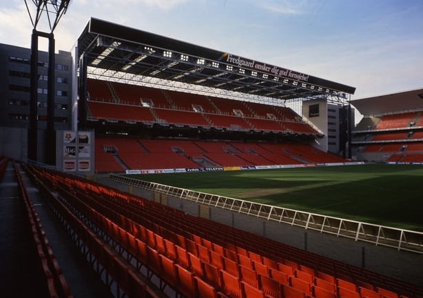

EURO 2020
STADIUMS AND MATCHES GUIDE
Johan Cryuff Arena
● Capacity: 54,000 seats
● Opened in August 1996
● Home team: Ajax
● Distance to city centre: approx. 10km
► Sunday, 14 June - Group C match
► Thursday, 18 June - Group C match
► Monday, 22 June - Group C match
► Sunday, 27 June - Round of 16 (2A V 2B)
Baku Olympic Stadium
● Capacity: 69,000 seats
● Opened in 2015
● Home team: Azerbaijan national team
● Distance to city centre: approx. 12km
► Saturday, 13 June - Group A match
► Wednesday, 17 June - Group A match
► Sunday, 21 June - Group A match
► Saturday, 4 July - Quarter Final (TBC)
San Mames Stadium
● Capacity: 53,000 seats
● Renovated completed in 2013
● Home team: Athletic Club de Bilbao
● Distance to city centre: approx. 3.5km
► Monday, 15 June - Group E match
► Saturday, 20 June - Group E match
► Wednesday, 24 June - Group E match
► Sunday, 28 June - Round of 16 (1B v 3A/D/E/F)
National Arena Bucharest
● Capacity: 54,000 seats
● Reopned in 2001
● Home team: FCSB, Dinamo Bucuresti
● Distance to city centre: approx. 3.5km
► Sunday, 14 June – Group C match
► Thursday, 18 June – Group C match
► Monday, 22 June – Group C match
► Monday, 29 June – Round of 16 (1F v 3A/B/C)
Puskas Arena
● Capacity: 68,000 seats
● Renovated completed in 2019
● Home team: Hungary mational team
● Distance to city centre: approx. 4km
► Tuesday, 16 June – Group F match
► Saturday, 20 June – Group F match
► Wednesday, 24 June – Group F match
► Sunday, 28 June – Round of 16 (1C v 3D/E/F)
Parken Stadium

● Capacity: 38,000 seats
● Opened in 1992
● Home team: FC Kobenhavn
● Distance to city centre: approx. 4km
► Saturday, 13 June – Group B match
► Thursday, 18 June – Group B match
► Monday, 22 June – Group B match
► Monday, 29 June – Round of 16 (2D v 2E)
Aviva Stadium
● Capacity: 51,000 seats
● Renovated completed in 2010
● Home team: Irish Rugby, ROI national team
● Distance to city centre: approx. 2km
► Monday, 15 June – Group E match
► Friday, 19 June – Group E match
► Wednesday, 24 June – Group E match
► Tuesday, 30 June – Round of 16 (1D v 2F)
Hampden Park
● Capacity: 51,000 seats
● Opened in 1903
● Home team: Scotland nationa team
● Distance to city centre: approx. 5km
► Monday, 15 June – Group D match
► Friday, 19 June – Group D match
► Tuesday, 23 June – Group D match
► Tuesday, 30 June – Round of 16 (1E v 3A/B/C/D)
Allianz Arena
● Capacity: 70,000 seats
● Opened in 2005
● Home team: Bayern Munchen
● Distance to city centre: approx. 10km
► Tuesday, 16 June – Group F match
► Saturday, 20 June – Group F match
► Wednesday, 24 June – Group F match
► Friday, 3 July, 21:00 CET – Quarter-final
Stadio Olimpico
● Capacity: 68,000 seats
● Opened in 1953
● Home team: Athletic AS Roma & SS Lazio
● Distance to city centre: approx. 5km
► Friday, 12 June– Group A match
► Wednesday, 17 June – Group A match
► Sunday, 21 June – Group A match
► Saturday, 04 July - Quarter-final
Petrovsky Stadium
● Capacity: 61,000 seats
● Opened in 2017
● Home team: Zenith St. Petersburg
● Distance to city centre: approx. 9km
► Saturday, 13 June – Group B match
► Wednesday, 17 June – Group B match
► Monday, 22 June – Group B match
► Friday, 03 July – Quarter-final